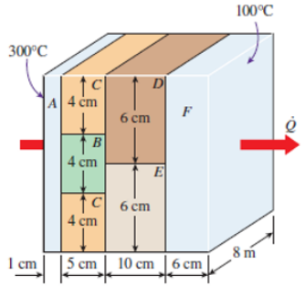
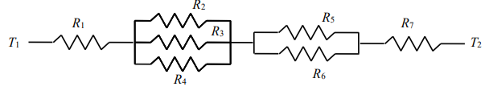
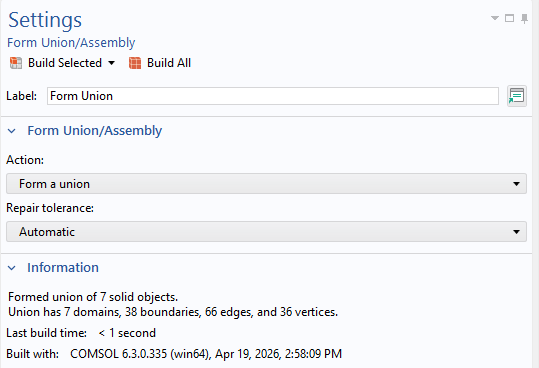
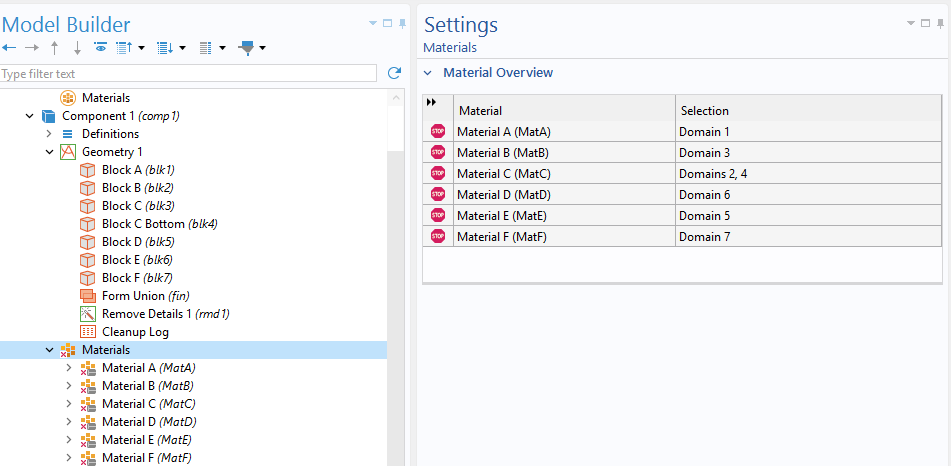
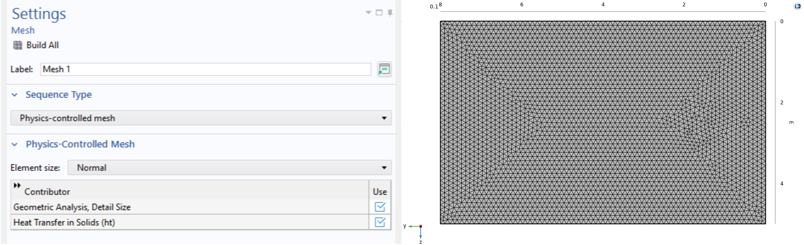
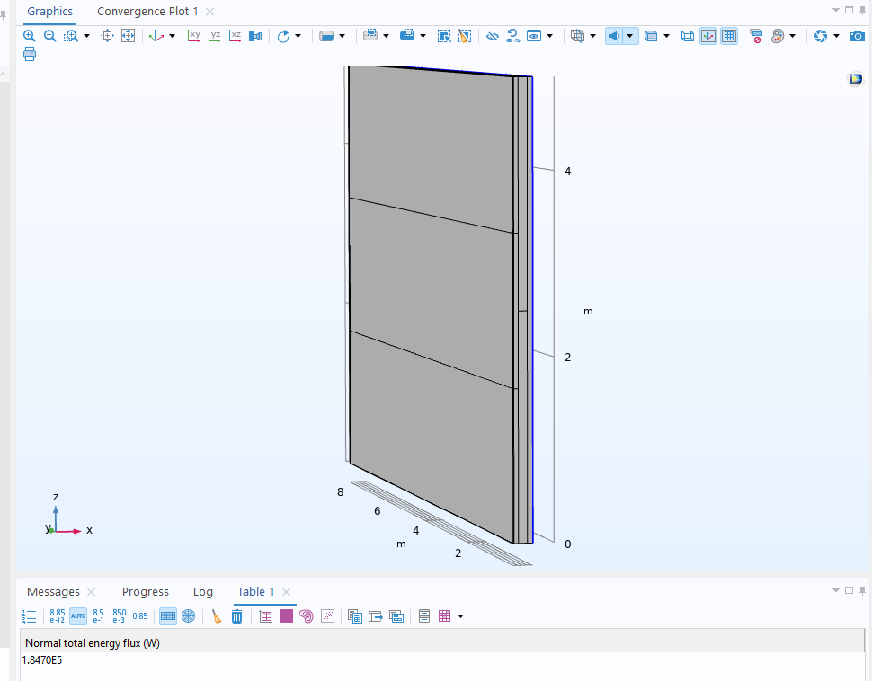
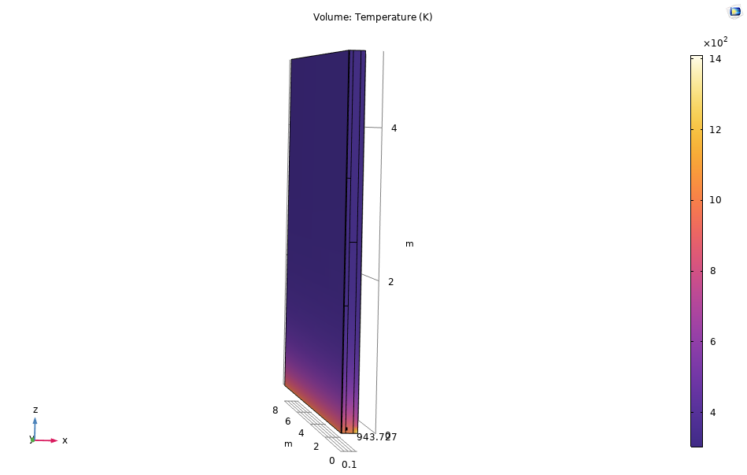
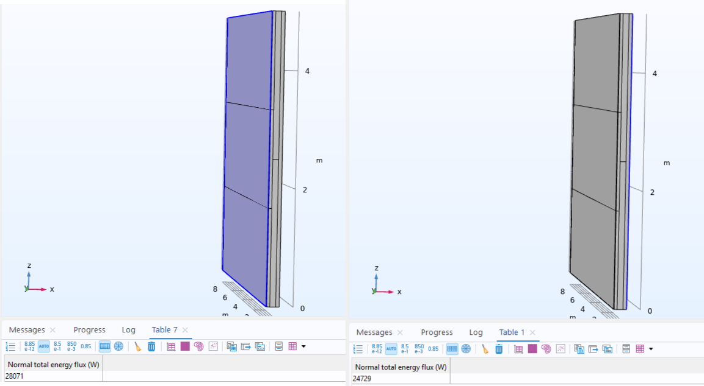

Composite Wall Heat Transfer Analysis
Investigated steady-state heat transfer through a multi-material composite wall using both analytical thermal-resistance methods and numerical simulation in COMSOL Multiphysics. The analytical model was first used to establish a baseline solution before a three-dimensional COMSOL model was developed and validated. Additional studies investigated convection, applied heat flux, multiple heat-loss surfaces, and mesh independence.

Understanding Heat Flow Through a Multi-Material Wall
Heat transfer through a composite wall becomes more complex when multiple materials create parallel and series conduction paths. Different thermal conductivities cause the temperature distribution and heat-transfer rate to depend not only on the wall thickness, but also on the arrangement of the individual materials.
A one-dimensional thermal-resistance model can provide an efficient analytical estimate, but it does not capture lateral temperature gradients or multidimensional heat-transfer effects. The objective of this project was therefore to compare the simplified analytical approach with a full numerical COMSOL model and then use the numerical model to investigate more complex boundary conditions.
Analytical Objective
Represent the composite wall as an equivalent thermal-resistance network and calculate heat transfer rate, interface temperature, and temperature drop through the final wall section.
Numerical Objective
Develop a COMSOL model capable of resolving the complete temperature field without imposing the one-dimensional heat-flow assumption used in the analytical solution.


Establishing a Baseline Using Thermal Resistance
The baseline case assumed steady-state, one-dimensional conduction with constant thermal properties, no internal heat generation, and insulated outer surfaces. Heat transfer through each material was described using Fourier's law, while the complete wall was represented as a combination of thermal resistances in series and parallel.
Governing Conduction Relationship
Heat conduction through each solid region is governed by Fourier's law.
For the simplified one-dimensional analytical model, each section can be represented using a conductive thermal resistance.
Junction BDE Temperature
The resistance from the 300°C boundary to Junction BDE was calculated and used with the heat flux to estimate the interface temperature. The analytical model predicted a temperature of approximately 263°C, or 536.15 K, at the junction.
Recreating the Composite Wall in Three Dimensions
Each wall region was individually constructed in COMSOL and positioned to reproduce the composite geometry. The blocks were then combined as a union so that heat could transfer continuously between adjacent material regions without artificial gaps.
Multi-Region Solid Model
The composite wall was divided into six material regions labelled A through F. Individual blocks were positioned according to the specified dimensions before being joined into one continuous thermal domain.


Assigning Thermal Conductivity
Each wall region was assigned its own thermal conductivity. The material conductivities ranged from 2 W/m·K in Blocks A and F to 35 W/m·K in Block E, creating different conductive paths through the wall.
Blocks A & F
Thermal conductivity: 2 W/m·K
Blocks B & C
B: 8 W/m·K
C: 20 W/m·K
Blocks D & E
D: 15 W/m·K
E: 35 W/m·K
Physics-Controlled Mesh
A physics-controlled normal mesh was used for the primary simulations. Finer and extremely fine mesh settings were later evaluated to determine whether further mesh refinement significantly changed the numerical solution.

Validating the Numerical Model Against the Analytical Solution
The first simulation reproduced the analytical boundary conditions. Block A was maintained at 300°C and Block F at 100°C, while the remaining external boundaries were treated as insulated. This provided a direct comparison between the simplified thermal-resistance model and the multidimensional COMSOL solution.
Fixed Temperatures
COMSOL Evaluation

Analytical vs. Numerical Validation
The COMSOL results showed strong agreement with the analytical thermal-resistance model. The heat-transfer rate differed by 3.30%, the Junction BDE temperature differed by 1.37%, and the temperature drop across Block F differed by 5.00%. These differences were attributed to the simplifying one-dimensional assumption used in the analytical solution compared with the multidimensional temperature field captured by COMSOL.
Replacing the Fixed Boundary With Convective Cooling
The second study replaced the fixed temperature boundary at Block A with convection to ambient air. A uniform heat flux was then applied along the bottom surface of the wall while the remaining boundaries were insulated. This changed the problem from one driven by two prescribed temperatures to one governed by the balance between heat input and convective heat loss.
Heat Concentration Near the Applied Flux
The highest temperature occurred near the bottom surface where the heat flux entered the system. Temperature decreased toward the convective boundary as energy was removed to the surrounding air. The surface temperature was not prescribed, allowing it to develop naturally from the balance between the applied heat flux and convection.
Increasing Heat Dissipation With a Second Cooling Surface
The third case retained the 30,000 W/m² heat flux applied along the bottom of the wall but exposed both side surfaces to convection. This provided an additional path for energy to leave the system and allowed the effect of increased cooling area to be studied.
Convection From Both Sides
Applying convection to both exposed sides reduced the maximum wall temperature compared with Case 2. The additional cooling area also produced a less steep temperature gradient and a more uniform overall temperature distribution.

Energy Balance Remained Unchanged
Although adding a second convective surface reduced the temperature level within the wall, the total heat leaving the two surfaces remained approximately equal to the heat loss obtained in Case 2. At steady state, the energy entering through the imposed heat flux must equal the energy leaving the system. Case 3 therefore redistributed the heat loss between two surfaces rather than changing the overall steady-state energy balance.

Verifying That the Results Were Independent of Mesh Refinement
Three physics-controlled mesh qualities were evaluated: Normal, Finer, and Extremely Fine. Key output quantities from all three simulation cases were compared to determine whether additional mesh refinement significantly changed the numerical solution.
Normal
Used for the primary analysis and produced results that were already effectively converged.
Finer
Produced negligible changes in both heat transfer rate and interface temperature compared with the normal mesh.
Extremely Fine
Further refinement produced only very small numerical changes, confirming mesh independence.
Normal Mesh Selected
The very small variation between the three mesh levels demonstrated that the solution was effectively independent of further mesh refinement. The physics-controlled normal mesh was therefore sufficient for the analysis while requiring less computational effort than the finer alternatives.
Analytical Validation and Boundary Conditions Confirmed the Model
The project demonstrated how a simplified thermal-resistance model can provide an effective engineering estimate while numerical simulation can capture the complete temperature field and more complex boundary conditions.
Analytical Model
Built an equivalent resistance network to establish baseline heat-transfer and temperature predictions.
Numerical Validation
Recreated the wall in COMSOL and achieved analytical-to-numerical differences of 5% or less.
Boundary Studies
Evaluated convection, applied heat flux, and additional heat-loss paths through multiple simulation cases.
Mesh Verification
Confirmed that the numerical results were effectively independent of further mesh refinement.
Project Outcome
Case 1 validated the COMSOL model against the analytical solution with a maximum difference of 5%. Cases 2 and 3 demonstrated how convective boundary conditions and available cooling area influence the temperature distribution without violating the steady-state energy balance. Finally, the mesh-sensitivity study confirmed that the normal physics-controlled mesh provided sufficient numerical accuracy.